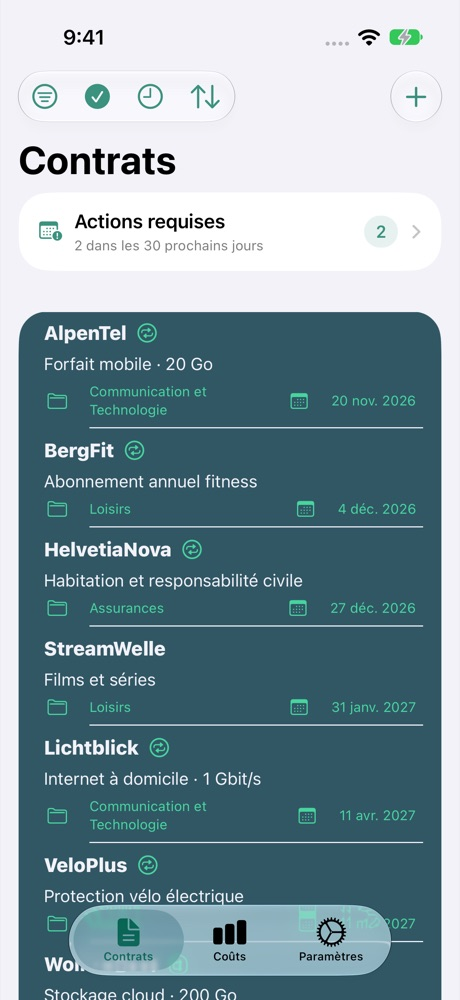
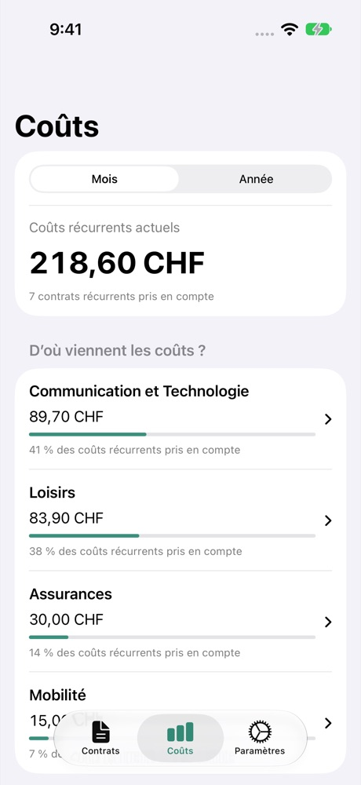

Anticiper les échéances
Suivez les délais de résiliation et configurez des rappels. Ajoutez aussi les dates à Calendrier et Rappels.
POUR LE QUOTIDIEN
Coûts, délais de résiliation et documents : Contractly organise vos contrats. Directement sur votre iPhone.
Voir sur l’App StoreJusqu’à 4 contrats gratuits · Contrats illimités avec Premium

Suivez les délais de résiliation et configurez des rappels. Ajoutez aussi les dates à Calendrier et Rappels.
Comparez vos coûts mensuels et annuels. Regroupez les montants dans une même devise d’affichage.
Joignez PDF, photos, scans et liens à vos contrats. Vos documents sont là où vous en avez besoin.

CONTRACTLY
Du forfait mobile à l’abonnement de sport : visualisez vos dépenses récurrentes. Les montants convertis sont indicatifs.
Saisissez le fournisseur, la durée et le préavis.
Ajoutez les coûts et les documents.
Vérifiez les échéances et configurez les rappels.
Les contrats et documents sont enregistrés sur votre appareil. Aucun compte Contractly n’est nécessaire. Certaines fonctions utilisent des services externes.
Le traitement des données en détail →Gérez jusqu’à quatre contrats gratuitement. Premium supprime cette limite. Consultez l’App Store ou la fenêtre d’achat pour le prix et les conditions actuels.
Oui. La fonction de sauvegarde et restauration permet d’exporter et de restaurer contrats, documents et réglages. Les sauvegardes exportées ne sont pas chiffrées : conservez-les en lieu sûr.